01 — Before anything else
Read this first
This is a faithful but unofficial adaptation of the CPT-SA Individual Treatment Manual (Chard, 2012). Faithful is the operative word: the sessions, the sequence, the worksheets and the handouts follow the published clinical manual. They have been adapted for AI-guided use and reformatted to read well on a screen — not rewritten, not reinterpreted, and not editorialised. Nobody has added their own theory of your recovery to it. Where it departs from the manual at all, that is listed openly further down.
It has not been reviewed, endorsed, validated, or approved by Kathleen Chard, Patricia Resick, Candice Monson, or anyone else involved in developing Cognitive Processing Therapy.
It's worth being precise about what that does and doesn't mean, in both directions. The course itself rests on well-tested ground. CPT is one of the best-evidenced treatments for PTSD that exists; the sexual-abuse version was validated in a randomised controlled trial; and the sessions, worksheets and handouts here follow that manual closely rather than reinventing it. What has never been tested is this way of delivering it — the whole course facilitated by an AI instead of a person. Good material, untested delivery. Both halves of that are true at once.
- This is the real work of therapy, without a therapist. The work is just as demanding done this way, and deserves the same seriousness. Claude can ask, listen, notice what you're avoiding, and follow the protocol carefully. What it cannot do is hold clinical responsibility or intervene if you are in danger. There is nobody on the other end who can call someone, check on you tomorrow, or be accountable for how this goes.
- So line up a real person before you start. A friend, a partner, a family member, a doctor, a helpline you would actually ring. Not to do the course with you, and not to be told any of the detail unless you want them to be — only so that somebody knows you are doing difficult work at the moment and would notice if you went quiet. This is the single most useful thing you can put in place, and it is the one thing the course cannot arrange for you. If there is genuinely nobody, weigh that seriously before you reach sessions 4–8.
- CPT normally begins with a clinical assessment. This course does adjust and stop — the safety protocol halts session content on distress, and the minimum waits between sessions hold whether or not you want them to. What's missing is the assessment that decides whether you should be doing this protocol at all, and a trained, supervised, accountable judgement behind every decision to continue.
- The part that helps most is also the hardest. Sessions 4–8 involve writing detailed accounts of the abuse and re-reading them daily. This is the stretch that does the work, and it can be a demanding few weeks — sleep, mood and steadiness are often unsettled while you're in the middle of it, and they usually settle again afterwards. None of that is a consequence of doing it this way: it is the same in a therapist's room, and the manual expects it. What is different here is who is watching how you are coping with it. Claude checks, and will stop the session work if you are struggling — but it only sees what you bring to a session, and there is no trained person watching the weeks in between.
- A trained CPT provider is the better-evidenced option, and worth checking for before you settle for this one. The directory is at cptforptsd.com. But better in principle and available to you now are different things. Cost, waiting lists, distance, a bad experience with a clinician before, or simply not being ready to say any of this out loud to another person are all real. This exists for the gap between the two — not as a replacement for a therapist you could actually see.
Do not use this if you are in an unsafe living situation, in acute crisis, actively suicidal or self-harming, experiencing psychosis, or in the middle of untreated substance dependence. Those are the conditions under which the protocol is most likely to hurt and least likely to help.
Use it with your eyes open, or don't use it.
02 — Setup
Getting started
What setup looks like
The whole thing, one screen at a time. The red bubbles mark the controls to use. Everything below writes the same steps out in words.
-
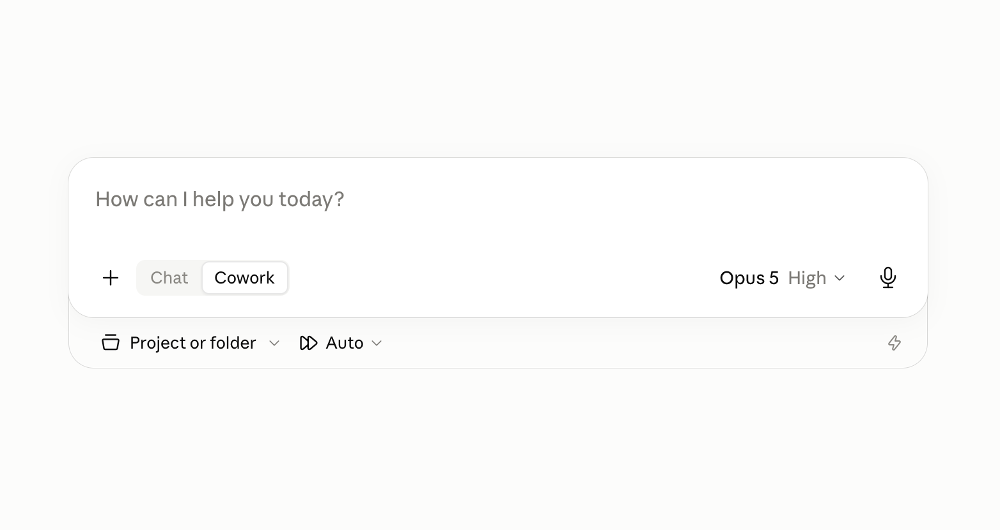
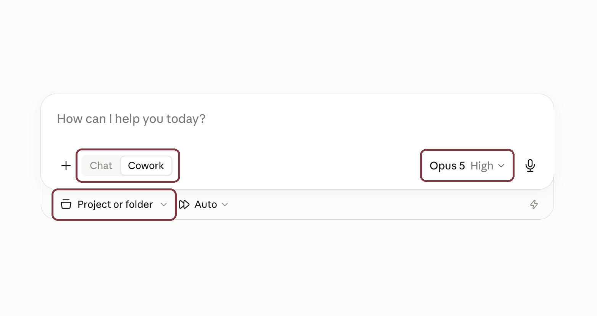
Steps one and twoTurn on Cowork, choose Opus 5 or Fable 5 (if available), then open Project or folder. If an effort level is shown next to the model name, set it to High — the sessions depend on unhurried, careful reasoning. Cowork is what lets Claude work with a folder on your computer rather than just chatting. -
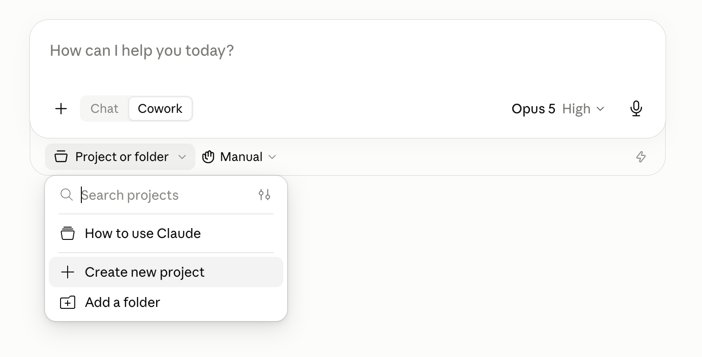
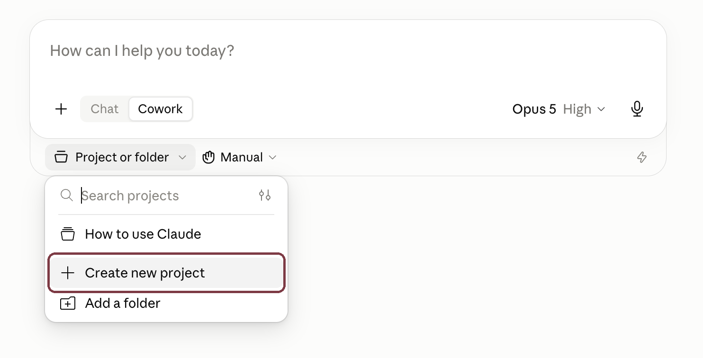
Step twoChoose Create new project. The next screen lets you name the project and connect the folder that will hold the course. -
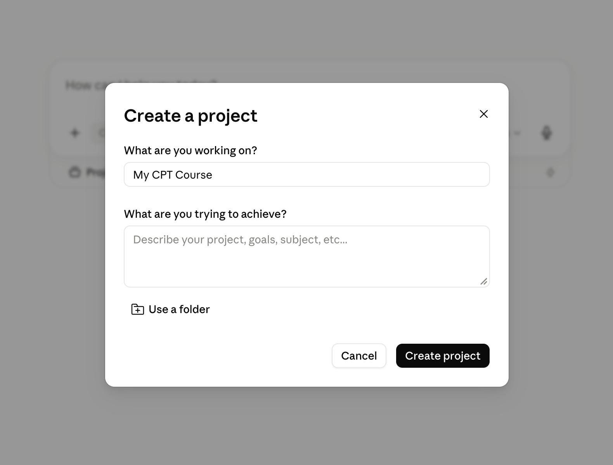
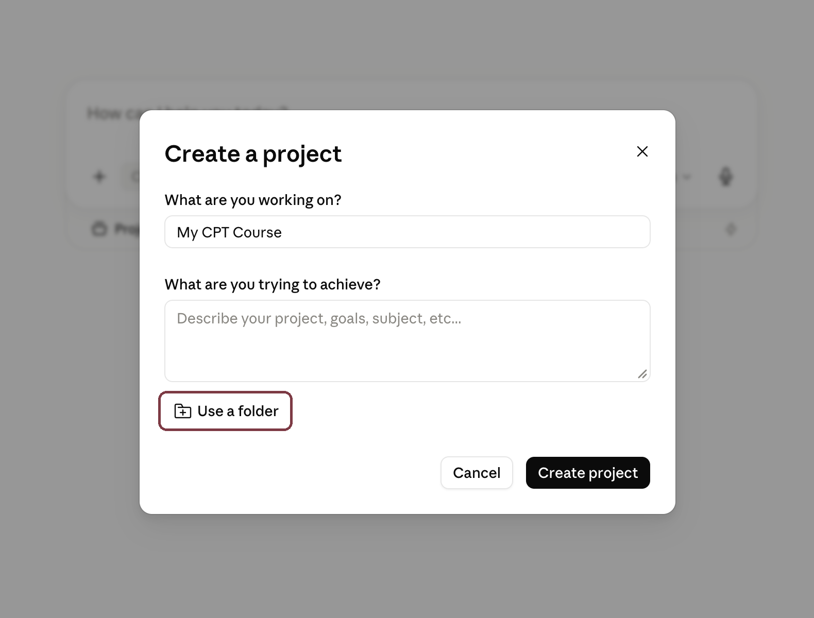
Step twoName the project My CPT Course, or another name. Leave the optional goal blank, then choose Use a folder. -
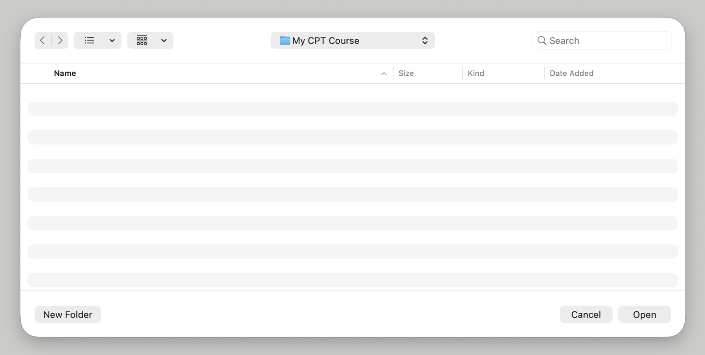
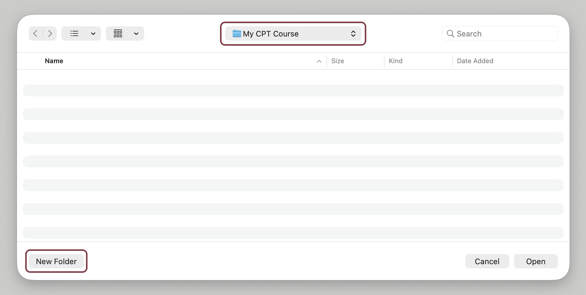
Step twoGive it an empty folder of its own. Make a new folder and point Cowork at it. Everything the course keeps — your writing, where you are, what comes next — lives here, and nowhere else. -
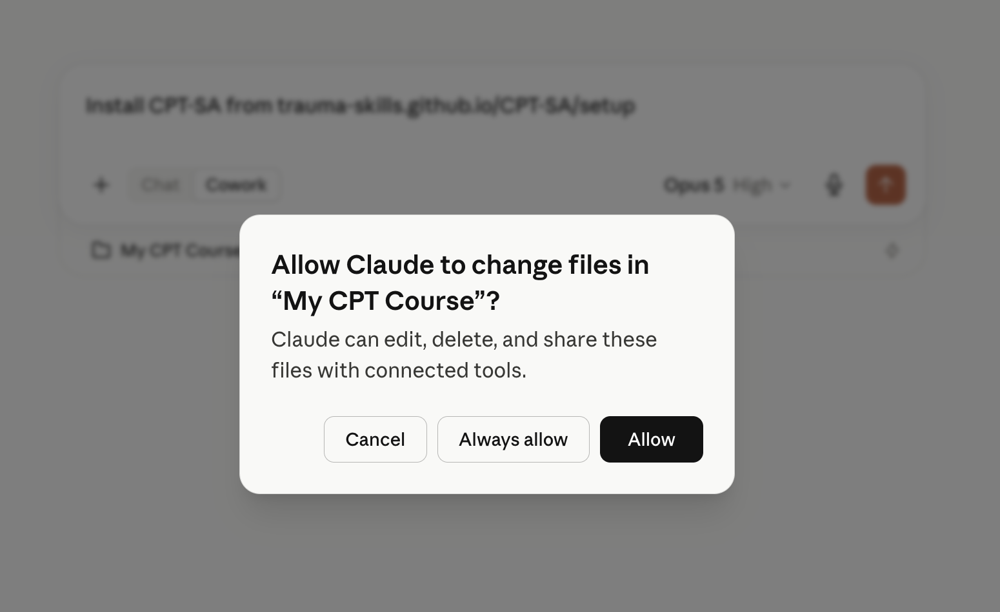
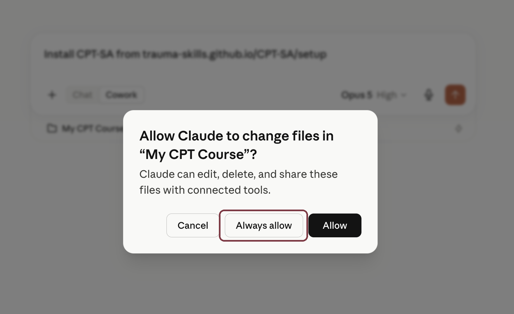
Step threeChoose Always allow. This gives Claude continuing access to the course folder so it can save your work and progress between conversations. -
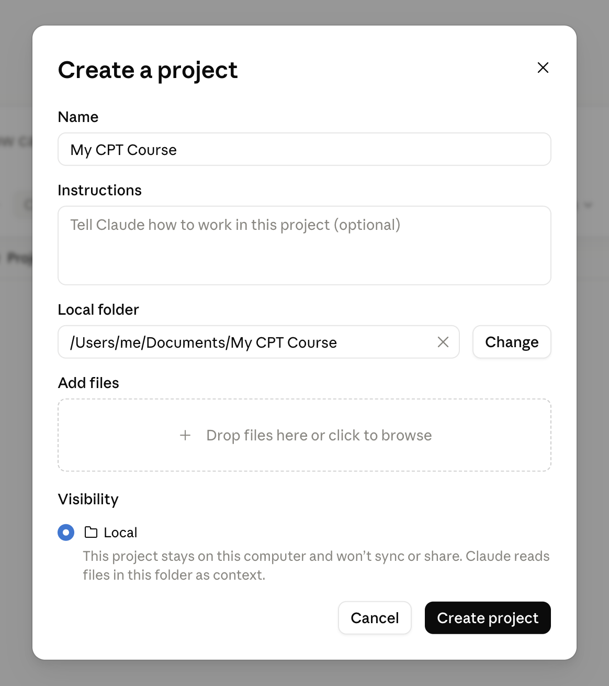
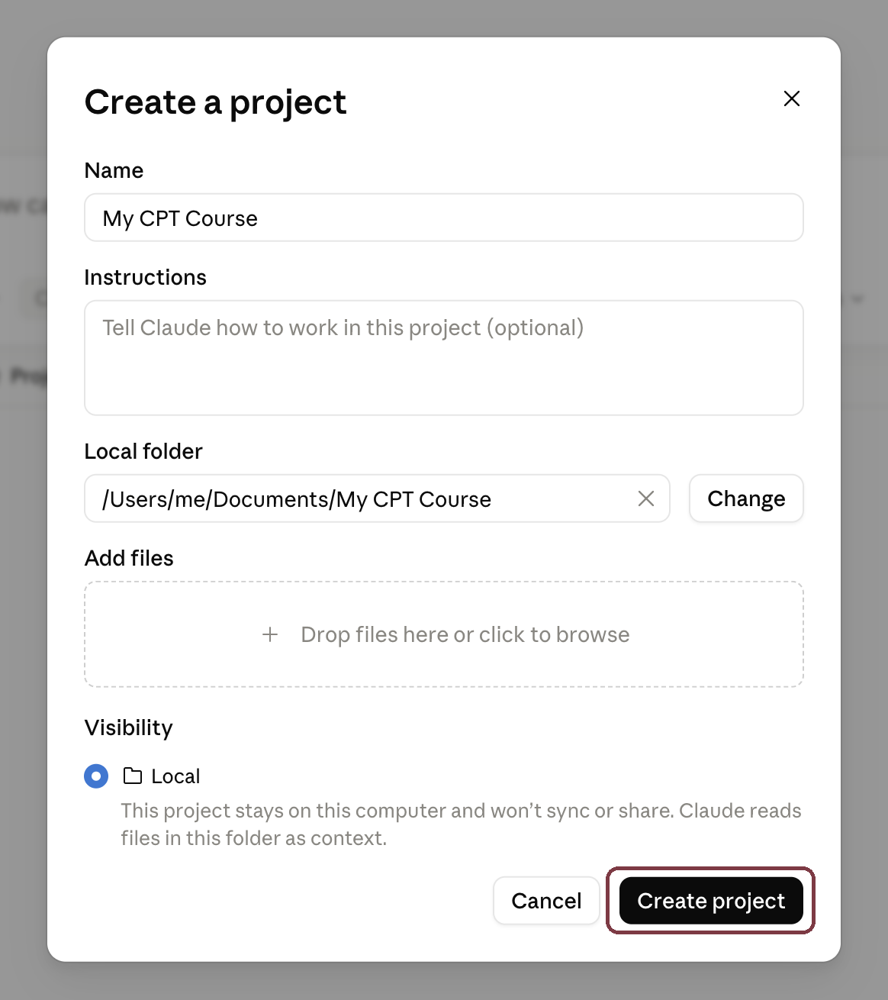
Step threeConfirm the details and create the project. Leave Instructions blank, keep visibility set to Local, and check the local folder is the one you just made. -
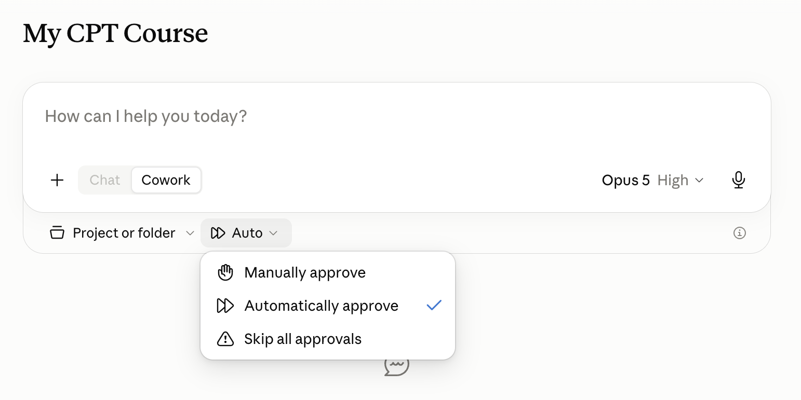
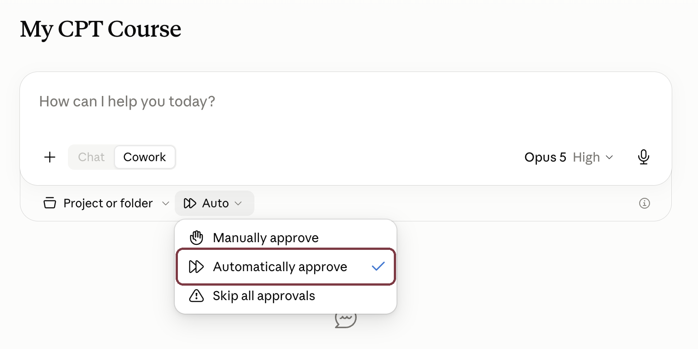
Step fourInside My CPT Course, use Automatically approve. The course reads and updates its files as you work, so this keeps each session from stopping for confirmation on every action. -
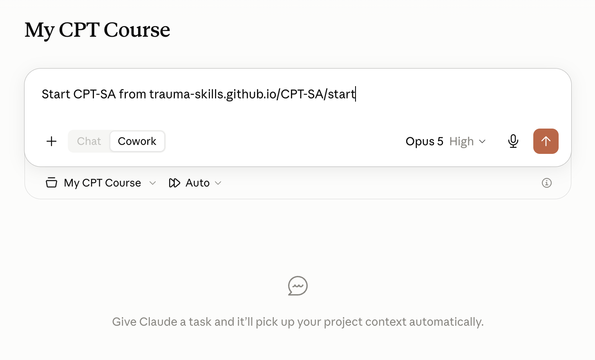
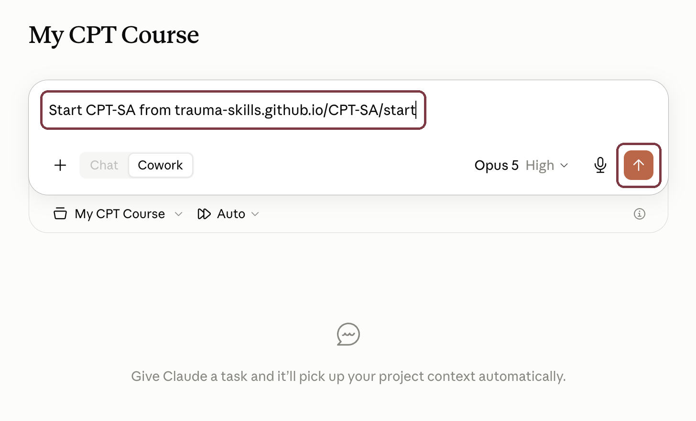
Step fivePaste the message and send it. Start CPT-SA from trauma-skills.github.io/CPT-SA/startThat's the whole install. Claude sets everything up and welcomes you in, starting with a short conversation about what brings you here — you don't need to do anything else.
What you need
| App | The Claude desktop app for macOS or Windows — download it here. Cowork runs in the desktop app; the web version will not do, and neither will the iPhone or Android apps. |
| Plan | A paid Claude plan — Pro, currently $20/month — at minimum. |
| Model | Claude Opus 5 or Claude Fable 5 — the two it has been tested with. Fable needs a Claude Max plan, while Opus is available on the Pro plan. |
| Anything else | Nothing. There is nothing else to install, download, or set up. If you can open the Claude app, you can run this. |
This is built for Cowork specifically, and won't work properly elsewhere. Cowork is what lets the course read its own notes at the start of every conversation, and what opens the handouts and the weekly check-in alongside the chat instead of burying them in the conversation.
Why those two models. It has to be Claude, because the whole thing is built on Cowork, which is what gives it a folder to keep your work in, notes it can read back at the start of the next conversation, and handouts that open beside the chat. Within that, Opus 5 and Fable 5 are simply the two it has been built and tested against.
That matters more than a preference usually would, because the session guides ask a lot of a facilitator across many turns — staying Socratic, not challenging beliefs before the protocol says to, tracking safety signals, writing continuity notes without being reminded. Another model might hold all of that perfectly well. Nobody has checked.
Six steps
- Open the Claude desktop app and start Cowork. Set the model to Opus 5 or Fable 5.
- Create a project for the course and give it its own empty folder. Open Project or folder, choose Create new project, name it My CPT Course or another name, leave the optional goal blank, and choose a new folder in Documents. Sixteen sessions of writing, notes and state accumulate, so keeping them together makes the course easy to find.
- Finish creating the project. Choose Always allow when Claude asks for folder access, leave Instructions blank, confirm the project is Local, then click Create project.
- Set approvals to Automatically approve. The course needs to read and update its files as you work; this avoids stopping for confirmation on every file action.
- Paste the install message and send it:
Start CPT-SA from trauma-skills.github.io/CPT-SA/startClaude does the rest, and welcomes you in with a short conversation about what brings you here. - After that, open a new conversation in My CPT Course whenever you want to work. Just say “Let's start.” It reads the files, works out where you are, and offers exactly one next thing. You never have to track it.
Two things to check before you paste that message. It asks Claude to fetch and set up files from the internet, which is worth doing deliberately rather than reflexively. Confirm the address is exactly trauma-skills.github.io/CPT-SA/start, and that you are signed into your own Claude account.
What you can say
| Say this | What happens |
|---|---|
| setup CPT-SA | First-time install into the current folder |
| start next session | Begin the next session, if it's unlocked |
| let's do my homework | Guided walkthrough of the current homework |
| where am I? | Orientation — current state and the next step |
| grounding | A grounding exercise, available at any time |
| check for updates | Look now for a newer version. Tells you what changed and waits — it never updates on its own |
| reset CPT-SA | Back to a first-run state. Confirms first, and archives your writing rather than deleting it |
What ends up in your folder
Everything is a plain file you can open, read, print, or delete yourself. Nothing is hidden or locked.
- Your writing
- A folder called
my-workholding everything you write — the Impact Statement, your accounts, your worksheets. This is yours. Nothing ever edits or removes it. - Where you are
- A progress file recording which sessions you've done, what the current homework is, and when the next session opens.
- The sessions
- All sixteen session guides and their handouts, so you can read ahead — or not — entirely as you prefer.
- Crisis resources
- A page of helplines, always there, that the course opens for you whenever things get heavy.
- Session notes
- Short continuity notes written as you go, so a new conversation can pick up where the last one stopped.
- The course itself
- A
CLAUDE.mdfile and askillfolder holding the instructions Claude follows — as readable as everything else. They're installed into this folder rather than anywhere global, so the whole thing is self-contained — and deleting the folder really does remove all of it, with nothing left behind on your computer.
Your course folder is personal. Keep it somewhere private, and don't put it in a shared drive, a synced folder, or anywhere that gets backed up publicly.
03 — The design
What it actually is
The insight the whole thing turns on: the folder is the memory.
A sixteen-session protocol will not fit into a single conversation, and two separate conversations with Claude share nothing — the second one has no idea the first ever happened. So everything that matters is written down in the folder instead: where you are, what you've written, how your scores are moving, when the next session opens. Every conversation begins by reading those notes and ends by updating them. That is what lets you work through sixteen sessions across dozens of short, separate conversations without ever having to remember where you left off.
- Pacing you can't rush
- The next session opens once the homework from the last one is done and at least 72 hours have passed — whichever takes longer. The heaviest sessions add a little extra rest, so you're never pointed at account-writing right before bed. The course keeps track of the timing itself, so the structure carries the pacing rather than your willpower.
- Safety before progress
- Distress, dissociation, or any mention of self-harm stops the session content. Claude helps you get steady first and puts the crisis helplines in front of you — only then does it ask whether you want to carry on. A grounding exercise is available whenever you ask.
- Your writing is yours
my-work/andnotes/are never edited, rewritten, or deleted. Even a full reset archives them rather than destroying them. Permanent deletion is yours alone to do, and it is easy: the archive is an ordinary folder on your own computer, and dragging it to the bin is the end of it.- Resumable mid-session
- Live notes are written after every beat, so a dropped conversation picks up where it stopped instead of starting the session over.
- Nothing to install
- There is nothing to download or set up beyond the Claude app itself. Nothing here is a separate app or program — it's all plain text you could open and read yourself.
04 — The arc
The sixteen sessions
The protocol moves through five phases. Each session opens only when the one before it is finished and the minimum wait has passed.
Before any of it comes a starting point — a single conversation about you: what brings you here, how it shows up in your life, and what you'd want back, closing with a short baseline check-in. In a therapist's practice a referral and intake would do this; here the course does it itself. It never asks for details of what happened, it can be skipped, and it adds no waiting time — session 1 follows it immediately. It is an addition of this adaptation: the manual's sixteen sessions below begin unchanged at session 1.
Education and “rules.” How trauma responses work, and the beliefs that get in the way of recovery. Ends by assigning the Impact Statement.
Thoughts and feelings. The link between what you think and what you feel, worked through A-B-C sheets.
The accounts. Writing and processing detailed accounts of the abuse, then Challenging Questions and Problematic Thinking Patterns. This is the hardest stretch and the most carefully paced.
The five belief themes. Safety, Trust, Power and Control, Esteem, and Intimacy — plus Social Support — worked through the Challenging Beliefs Worksheet.
Closing. A rewritten Impact Statement, read against the first one, and future goals.
Sessions marked with a dot administer the PCL-S. The manual schedules it on the even sessions; the starting point adds a baseline before session 1.
05 — Privacy
Where your writing goes
This is the most sensitive category of personal writing there is. The claims below are deliberately specific rather than reassuring.
What this project does
- No analytics, no tracking, no crash reporting. Nothing about you or your use of this is recorded anywhere but your own folder, and nothing is ever sent anywhere.
- It goes online for exactly one thing. At most once a fortnight, when you open a conversation and before anything else happens, it looks at this website to see whether a newer version of the course has come out — then tells you, and waits. It doesn't send anything about you: not your writing, not your progress, not who you are. It's the same as your own browser opening a page here, so whoever hosts this site sees what any website sees — that a computer somewhere asked for a file. Nothing is downloaded or changed unless you say yes, and you can switch the check off for good by saying stop asking about updates. With it off, the course never goes online at all.
- No accounts, no servers, no sync, no cloud storage. Your course folder is a folder on your own disk, and nothing in this project ever uploads it.
- The welcome card and the check-in form don't reach out to anyone. Everything they need is inside them — no fonts, pictures or code pulled in from other companies. This web page is the same: it doesn't track you, and it stores nothing on your computer.
- All of it is just writing, and you can read it. Every part of this course is a document — the sessions, the handouts, the instructions Claude follows. Nothing is a program, nothing is scrambled or hidden, and nothing needs special software to open. If you want to know what a session will ask of you before you start it, you can go and read it.
- Your writing is never modified or deleted by the course. Even a reset archives rather than deletes. You can delete it permanently whenever you like — the archive is a normal folder on your own computer, and nothing here keeps a second copy anywhere, so deleting it is genuinely the end of it.
The honest caveat — read this one
You are talking to Claude. What you type during a session is sent to Anthropic to generate the response, exactly as with any other Claude conversation, handled under Anthropic's privacy policy and whatever data settings apply to your plan. This project cannot change that and does not pretend to. What stays local is your files; what you type in the conversation is not local.
So the exposure is exactly one party: Anthropic, and nobody else. No third party receives anything — not the maintainers of this project, not an analytics vendor, not a hosting provider, not any other service. There is no middleman, because there is no server between you and Claude.
That is inherent to using an AI facilitator, not a flaw in this design — but decide whether it's acceptable to you before you start, not after. If it isn't, don't use this.
Use your own accounts — on Claude, and on the computer
There are two separate doors into this material, and both need to be yours.
- Your Claude account. Everything runs under whichever account is signed in, and that account's history is where the conversations live. A shared household, family, or work account means someone else can open the app and read every session you have done.
- Your login on the computer itself. This matters just as much, and it's easy to miss: your writing is saved as files inside whichever user account you're logged into on that machine. A shared computer login — the family laptop everyone uses, a communal desktop, a shared work profile — means anyone who sits down and logs in can open and read it, no matter whose Claude account created it. Use a login that is yours alone, with a password, and set the screen to lock.
- Not a work or employer-managed account, on either. Those can be subject to administrator access, device management, retention policies, and audit.
- Keep the folder in your own user directory — not a shared drive, not a synced folder, not anywhere backed up somewhere you wouldn't want it.
If you cannot get sole control of both, this is not safe to use yet — sort that out first. It is worth the delay.
06 — Evidence
Clinical notes
Why this exists
CPT is one of the best-evidenced treatments for PTSD in existence, and most people who could benefit from it never get it — because there is no trained provider nearby, because there's a waiting list, because it's unaffordable, or because the prospect of telling a stranger in a room is itself the barrier. The manual is obtainable. The protocol is highly structured. That structure is what makes it unusually amenable to being held by software: a sequence of defined sessions with defined homework and defined worksheets, not free-form clinical improvisation.
There is a second reason, and it isn't about access at all. Some people arrive here having already tried a therapist and been harmed by one — a confidentiality breach, a boundary crossing, a dependence that was encouraged and then withdrawn, or simply a clinician out of their depth with this material. For that group, “find a therapist” is not straightforwardly good advice, and treating it as though it were is a way of telling someone their experience didn't happen.
That is the argument for. It does not make the result equivalent to treatment, and what follows is precise about where the evidence stops.
Strong · CPT itself
CPT is strongly recommended for PTSD by the APA Clinical Practice Guideline, the VA/DoD guideline, and ISTSS, on the basis of a large body of randomised trials.
Supported · CPT-SA specifically
The sexual-abuse adaptation this project is built from was tested in a randomised controlled trial: 71 women with PTSD related to childhood sexual abuse, randomised to CPT-SA or a minimal-attention waitlist, assessed at post-treatment and at 3-month and 1-year follow-up. CPT-SA substantially outperformed the control condition, and gains held at follow-up.
Chard, K. M. (2005), Journal of Consulting and Clinical Psychology, 73(5), 965–971. PubMed
Well supported · Remote delivery by video
Several non-inferiority randomised trials have found CPT delivered over video to be non-inferior to CPT delivered in person:
- 126 women with PTSD, veterans and civilians, video-teleconferencing versus in-person; improvement in the video arm was non-inferior and held at 3- and 6-month follow-up. Morland, Mackintosh, Rosen, Willis, Resick, Chard, & Frueh (2015), Depression and Anxiety, 32(11), 811–820. PubMed
- CPT for PTSD delivered to rural veterans via telemental health: a randomised non-inferiority clinical trial, Journal of Clinical Psychiatry (2014). PubMed
- In-office, in-home, and telehealth CPT for PTSD in veterans: a randomised clinical trial, BMC Psychiatry (2022) — remote arms performed at least as well as in-office. PMC
Supported · Sessions more often than once a week
The minimum wait between sessions here is 72 hours, which is faster than the weekly rhythm most people picture, so it's fair to ask whether that is a compromise. It isn't — and the evidence leans mildly the other way.
CPT is written to be delivered once or twice weekly, so more often than weekly is inside the protocol rather than a departure from it. In an ongoing non-inferiority trial of a five-day massed CPT format, twice-weekly individual CPT over six weeks is the standard comparison arm — not the experimental one.
Across trauma-focused therapy generally, a meta-analysis of 160 randomised trials covering 10,556 patients found no difference in efficacy between more-intensive delivery (at least 1.5 sessions a week) and standard delivery — and significantly lower dropout from the more intensive schedule.
Hoppen, Kip & Morina (2023), Journal of Anxiety Disorders, 95, 102684. PubMed
The same pattern appears in Prolonged Exposure specifically. A meta-analysis of 35 randomised trials (1,508 adults) found dropout of 21.0% where sessions were prescribed at least twice weekly, against 34.0% where they were less frequent. And a non-inferiority trial in 134 military personnel and veterans compressed ten PE sessions into two weeks: non-inferior to ten weekly sessions, with dropout of 4.8% against 16.9%.
Levinson, Halverson, Wilson & Fu (2022), Journal of Traumatic Stress, 35(4), 1047–1059 — PubMed; Dell and colleagues (2022), Psychological Medicine, 53(9), 4192–4199 — Full text
72 hours is a minimum, not a schedule. Nothing pushes you towards it, and there is no streak to keep. Weekly is a perfectly good rhythm and is what the manual assumes; slower than weekly is fine too. The minimum exists to prevent the opposite failure — sixteen sessions crammed into a fortnight because nothing was stopping you — and to take one decision away from you at a moment when you shouldn't have to make it. How you actually space them is yours.
And the pace here answers to you rather than to a diary. In ordinary practice the interval between sessions is settled between two calendars and a clinic's capacity; the once-a-week model is the norm in outpatient practice rather than a finding about which interval works best. That is not a small detail. In a randomised trial of 136 women receiving CPT or PE, longer average gaps between sessions predicted significantly smaller symptom reduction — and so did less consistent spacing. Sessions that slip through cancellation, leave and rescheduling are not neutral.
Gutner, Suvak, Sloan & Resick (2016), Journal of Consulting and Clinical Psychology, 84(12), 1108–1115. PubMed
What none of it licenses. It identifies no ideal interval, and nobody has tested 72 hours specifically. Every study above had a clinician setting the pace and a fixed course length — the finding that frequent, regular sessions do better is not the same as showing that a person left to schedule themselves will achieve that.
Promising, early · Delivery by text, without a live session
Remote CPT is not only a video-call story, and the written strand matters more here because it is closer to how this course actually works.
CPT-Text is an adaptation of CPT for asynchronous message-based delivery — no live session at all, the work carried out in writing over time. In an open trial of 28 people, compared with a matched group receiving ordinary messaging therapy on the same platform, CPT-Text produced substantially greater symptom improvement in less time, and its 63% completion rate was comparable to face-to-face and video CPT. A much larger randomised trial (300 participants) is under way.
Wiltsey Stirman and colleagues (2021), “Open Trial of an Adaptation of Cognitive Processing Therapy for Message-Based Delivery,” Technology, Mind, and Behavior, 2(1). Full text
Separately, Written Exposure Therapy — a brief, entirely written trauma treatment — has been found non-inferior to CPT itself in two randomised trials, with lower dropout. It is a different protocol, not CPT delivered in writing, but it is good evidence that processing trauma on the page is not a compromise.
Sloan, Marx, Lee, & Resick (2018), JAMA Psychiatry — PubMed; Sloan, Marx, Resick et al. (2022), JAMA Network Open — Full text
The caveat that survives all of it. Every study above — video and text alike — had a trained human therapist doing the work. Together they establish that CPT survives losing the room, losing the face, and even losing the live session. None of them establish what happens when you remove the therapist.
Weak, and mostly guided · Self-guided and internet-delivered
The Cochrane review of internet-based cognitive and behavioural therapies for PTSD found they may produce a clinically important symptom reduction versus waitlist, but rated the certainty of evidence very low, on a small number of trials, with no evidence of benefit at short-term follow-up and no trials reporting adverse events.
Lewis, Roberts, Bethell, Robertson, & Bisson (2018), Cochrane Database of Systematic Reviews, 12, CD011710. PubMed
Where internet-delivered trauma therapy has performed best — the Spring programme in the UK, non-inferior to face-to-face trauma-focused CBT at 16 weeks, though not sustained at 52 weeks — it was guided self-help: the participant worked through material alone, but with scheduled contact from a real therapist throughout. Fully unguided delivery is consistently the weakest arm in this literature, with markedly higher dropout.
That distinction is the entire design brief here, and this project is built for the guided side of it. It is deliberately not a workbook you open by yourself. Something reads your notes at the start of every conversation, works out where you are, holds the pacing, asks after the homework, notices what you are steering around, and stops the session if you are in distress. Those are the functions that separated the guided arms from the unguided ones.
The difference — and it is not a small one — is that in every trial in that literature, the guide was a person. Whether something that performs the same functions without being a person produces the same benefit is precisely the untested question, and it is the subject of the block below.
No evidence · A facilitator that is a language model
There is no evidence base for CPT facilitated by a large language model. None.
No trial, no pilot, no case series. This project is not an implementation of an evidence-based delivery method; it is an untested extrapolation from one.
The known risks of that extrapolation are worth naming:
- Its read on how you're doing is unvalidated. It has only what you write, and trauma survivors under-report — a clinician also has tone, pace, hesitation and body language that a text channel never carries.
- It may miss dissociation, which is common in this population and especially likely during account work. It might well notice; nobody has ever measured how reliably.
- It may be inappropriately agreeable where a clinician would push back, press on where a clinician would stop, or pause when a clinician would continue.
- Nobody is checking on you if you go quiet mid-protocol.
- Nothing here is accountable to anyone — no licence, no supervisor, no regulator, no duty of care.
The safety scaffolding here — the minimum waits between sessions, distress checks, grounding, crisis resources, the rule that safety overrides progress — is a genuine attempt to mitigate that. It is a mitigation, not a solution, and it has not been validated either.
Deliberate deviations from the manual
- No diagnosis
- The manual assumes a completed clinical assessment and tells the client they have PTSD. This project offers psychoeducation and invites you to notice what resonates instead. It never asserts you have a disorder.
- A starting point added
- The manual assumes a referral and an intake conversation happened before session 1. This adds an optional, intake-style conversation in their place — what brings you here, what it's costing, whether now is the right time — with a baseline PCL-S at its close, restoring the pre-treatment measure the manual takes for granted. It sits before the manual-derived material; the sixteen sessions themselves start unchanged at session 1.
- Minimum waits added
- The manual is therapist-paced, at one or two sessions a week. This adds a hard 72-hour minimum between sessions plus per-session homework cooldowns, because no clinician is watching for someone doing all sixteen sessions in a fortnight. The minimum is deliberately not weekly — see the pacing evidence above.
- Scores never read back
- The manual has a clinician interpret the PCL-S. Here it stays facilitator-facing, because a rising score with nobody to contextualise it is more likely to harm than help.
- Worksheets are guided
- A-B-C sheets, Challenging Questions and the Challenging Beliefs Worksheet are worked through conversationally rather than issued as blank forms, since there's no session to bring a half-finished form back to.
07 — Credit where it belongs
Attribution
The clinical content — the session structure, the therapeutic sequence, the handouts, the worksheets — is derived directly from Dr. Kathleen Chard's CPT-SA Individual Treatment Manual (2012), which the developers of CPT publish on their own site — read it in full (PDF).
CPT-SA is the version of Cognitive Processing Therapy written specifically for survivors of childhood sexual abuse. CPT itself is a treatment for PTSD developed by Patricia A. Resick, Candice M. Monson, and Kathleen M. Chard; its current comprehensive manual is Cognitive Processing Therapy for PTSD: A Comprehensive Manual (2nd ed., Guilford Press), and its official home — including provider training and the provider directory — is cptforptsd.com.
The handouts in this course are the CPT-SA manual's handouts, reformatted to read well on a screen. They are included because the course is unusable without them, under a good-faith reading of personal and educational use.
Further reading
- CPT official site — training, consultation, provider directory
- VA National Center for PTSD — CPT
- APA Clinical Practice Guideline — CPT
- ISTSS — CPT treatment materials
- CEBC — CPT program profile
08 — Reuse
Licence
Split, deliberately. See NOTICE.md for the full statement.
- Free and open source (MIT license)
- The scaffolding — the operating manual (
install/CLAUDE.md),install/skill/excludingbootstrap/sessions/, and the widget HTML. The folder-as-memory design, the pacing rules, the install and reset semantics. Original work, freely reusable. - Not licensed
- Everything under
install/skill/bootstrap/sessions/— session guides, handouts, worksheets. Derived from Dr. Chard's manual. No rights are granted, because none are held.
If you want to reuse the machinery for a different protocol, the MIT part is what you want, and it is genuinely reusable — the folder-as-memory pattern, the gating, and the archive-never-delete guarantees are all protocol-agnostic.